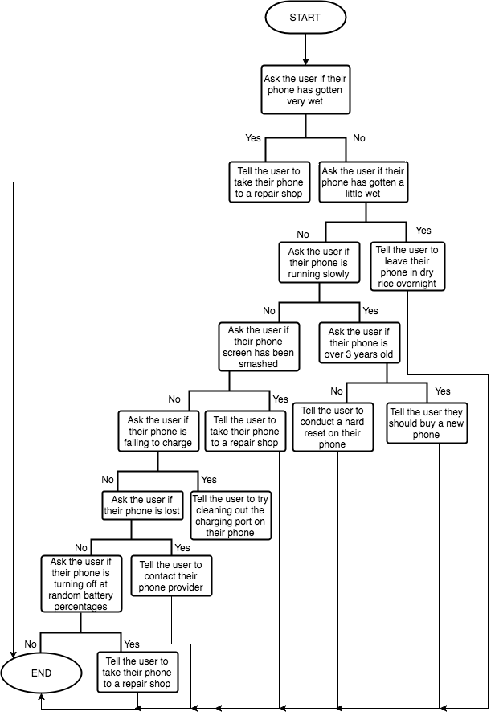

Analyse the requirements for this system and design, develop, test and evaluate a program to interrogate the user about the nature of the device and the problem, leading to a solution or advice to call the supplier. You will need to create a suitable troubleshooting tree for a mobile device. This should be a demonstration version of the system with at least 10 possible outcomes, but need not include an exhaustive list of potential problems or outcomes.
So, I need to develop a program where in which the user can find answers to common problems they might be having with their
mobile device.
I need to make this program short and sweet, my target consumers aren't looking for a beautified program, they just want to fix
their phone. This also saves me time and effort.
The first question I need to ask myself is what components of my programming knowledge am I going to have to use to develop this
program. I wrote a short list in my notebook in real life, here's what i wrote:
For my planning I've made a flowchart and also written some basic outline pseudocode to help display and demonstrate how my program will
function and what basic logic it will follow.
Here's my flowchart:

And here's my pseudocode:
phone_very_wet = input("Has your phone gotten very wet? (y/n)") -> to lowercase
if phone_very_wet == 'y' then
print('Please take your phone to the nearest repair shop!')
elif phone_very_wet == 'n' then
phone_wet = input("Has your phone gotten wet at all? (y/n)") -> to lowercase
if phone_wet == 'y' then
print('Please try leaving your phone in a bowl of dry rice overnight!')
elif phone_wet == 'n' then
pass
else then
exit()
else then
exit()
phone_slow = input("Is your phone running very slowly? (y/n)") -> to lowercase
if phone_slow == 'y' then
phone_old = input('Is your phone model more than 3 years old? (y/n)') -> to lowercase
if phone_old == 'y' then
print("Upgrade your phone to a newer model!")
elif phone_old == 'n' then
print("Conduct a hard reset on your phone!")
else then
exit()
elif phone_slow == 'n' then
pass
else then
exit()
phone_smashed = input("Has your phone screen smashed? (y/n)") -> to lowercase
if phone_smashed == 'y' then
print('Please take your phone to the nearest repair shop!')
elif phone_smashed == 'n' then
pass
else then
exit()
phone_wont_charge = input("Is your phone failing to charge? (y/n)") -> to lowercase
if phone_wont_charge == 'y' then
print('Please clean out the charging port on your phone by blowing hard into it!')
elif phone_wont_charge == 'n' then
pass
else then
exit()
phone_lost = input("Is your phone lost? (y/n)") -> to lowercase
if phone_lost == 'y' then
print('Please contact your phone provider!')
elif phone_lost == 'n' then
pass
else then
exit()
phone_battery_issues = input("Is your phone turning off at random battery percentages? (y/n)") -> to lowercase
if phone_battery_issues == 'y' then
iosten = input("Is your phone running iOS 10 or above? (y/n)") -> to lowercase
if iosten == 'y' then
updated = input("Is your phone updated to the most recent version? (y/n)") -> to lowercase
if updated == 'y' then
print('Please take your phone to the nearest repair shop!')
elif updated == 'n' then
print('Please update to the most recent version!')
else then
exit()
elif iosten == 'n' then
print('Please take your phone to the nearest repair shop!')
else then
exit()
elif phone_battery_issues == 'n' then
pass
else then
exit()
print('Please take your phone to the nearest repair shop!')
Here's my commented end code:
https://gist.github.com/iJamesPHP/7772bc475fa93b5e1a3111f759997e9b
In this section I'll describe the different aspects of my program, how they work and why I've chosen to do it that way.
sysp(), I use this function instead of the print() function so that I can always
add the same prefix to all my outputs and structure them nicely.
sysinp(), this function is to add the same prefix as sysp() to input messages.
incorrect_answer() that tells the user their input is wrong
and exits the program after. This saved me alot of time and lines of code, this will also help me change the incorrect answer reaction across the
whole program by only re-writing one section of code if needs be.
solution() that prints out a given solution and exits the program.
solution() -> Tell the user to take their phone to the nearest repair shopsolution() -> Tell the user to try leaving their phone in a bowl of dry rice overnightincorrect_answer()incorrect_answer()solution() -> Tell the user to upgrade their phone to a newer onesolution() -> Tell the user to take their phone to the nearest repair shopincorrect_answer()solution() -> Tell the user to try leaving their phone in a bowl of dry rice overnightincorrect_answer()incorrect_answer()| Scenario | Data Used | Expected Outcome | Actual Outcome | Evaluation |
|---|---|---|---|---|
| An answer to a question that isn't allowed | Typing 'test' instead of 'y'/'n' when asked if my phone screen is smashed | To be told it's an incorrect answer and then the program will exit | I was told it's an incorrect answer and the program exited | This feature is working in my program |
| Solution for a user with a phone less than 3 years old that's running very slowly | Answering 'y' to if the user's phone is running very slowly and 'n' to if the user's phone is older than 3 years | To be told to take it to the nearest repair shop | I was told to take it to the nearest repair shop | This feature is working in my program |
| Inputting a blank name | Setting my name as '' | To be told it's an incorrect name and to exit | Program outputted 'Hello, ' | This feature wasn't working, I forgot to add an IF statement checking wether or not the user inputted a blank name |